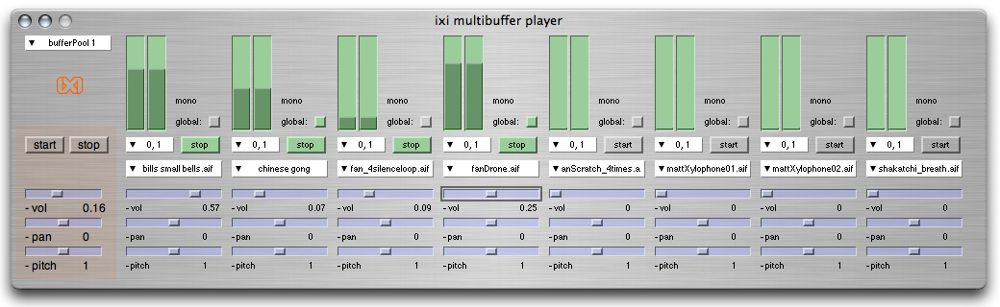

ixiQuarks : BufferPlayer

| BufferPlayer |
|
The BufferPlayer does precisely what its name indicates. It plays buffers stored in the buffer pools. You can choose which pool you use and then you can play the buffers from RAM. There is a global control over selected channels, that allows you to control various parameters in the selected channels (start and stop or control amplitude, etc.) There is control over panning, pitch (-1 is backward, 1 is forward, 0.5 is half speed and octave lower) and amplitude. Very simple but useful tool. |